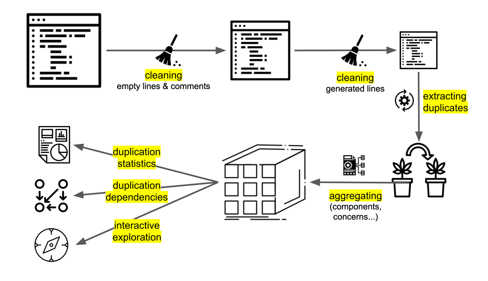

Analysis: Duplication
Duplication is Bad
I always wanted to say something smart about duplication and why it is bad. But others have done it years ago, and much better. So I will satisfy my wish to talk about duplication by quoting few of the online resources:
- Avoid Repetition, MartinFlower.com (IEEE Software article)
- “Avoiding repetition is a simple principle that leads to good design.”
- “I have an increasing sense that a pig-headed determination to remove all repetition can lead you a long way toward a good design and can help you apply and understand the patterns that are common in good designs.”
- Refactoring duplicated code, sourcemaking.com
- “Merging duplicate code simplifies the structure of your code and makes it shorter.”
- “Simplification + shortness = code that is easier to simplify and cheaper to support.”
- Beck Design Rules, MartinFowler.com
- “[No duplication] is a notion expressed elsewhere as DRY [Don’t Repeat Yourself] or SPOT [Single Point Of Truth], Kent expressed it as saying everything should be said “Once and only Once.” Many programmers have observed that the exercise of eliminating duplication is a powerful way to drive out good designs.”
- Code Smells / Duplicated Code, Jeff Atwood, codinghorror.com:
- “Duplicated code is the bane of software development. Stamp out duplication whenever possible. You should always be on the lookout for more subtle cases of near-duplication, too. Don’t Repeat Yourself!”
- Code Duplication, Donald Raab
- “So, duplication sucks. The more rabidly a person hates duplication, the more I trust their opinions on managing information. A programmer, upon noticing some redundancy, should be thrown into a panic, begin hyperventilating, and stammer something about “¡El diablo! !El diablo está en mi software!. — Ryan King”
- The Cut-and-Paste Programming Software Development Anti-Pattern, sourcemaking.com
- “Cut-and-Paste Programming is a very common, but degenerate form of software reuse which creates maintenance nightmares.”
Analyzing Duplication
For duplication, we look at places in code where there are six or more lines of code that are exactly the same. I reuse the treshold of siz lines as it is used in tools that measure duplication (e.g. see Simian).
code ==> cleaned code ==> list of duplications ==> aggregation

Cleaning the Code
Before duplication is calculated, the code is cleaned to remove empty lines, comments, and frequently duplicated constructs such as imports.
Here is an example of code cleaning:
Before the cleaning:
/*
* Copyright (c) 2019 Željko Obrenović. All rights reserved.
*/
package nl.obren.sokrates.sourcecode.operations.impl;
import nl.obren.sokrates.sourcecode.operations.StringOperation;
import java.util.List;
public class LowerCaseOperation extends StringOperation {
public LowerCaseOperation() {
super("lowercase");
}
public LowerCaseOperation(List<String> params) {
this();
this.setParams(params);
}
@Override
public String exec(String input) {
return input.toLowerCase();
}
}package nl.obren.sokrates.sourcecode.operations.impl;
import nl.obren.sokrates.sourcecode.operations.StringOperation;
import java.util.List;
public class LowerCaseOperation extends StringOperation {
public LowerCaseOperation() {
super("lowercase");
}
public LowerCaseOperation(List<String> params) {
this();
this.setParams(params);
}
@Override
public String exec(String input) {
return input.toLowerCase();
}
}After cleaning (removal of comments, empty lines, import statemants, and leading and trailing whitespaces in each line):
public class LowerCaseOperation extends StringOperation {
public LowerCaseOperation() {
super("lowercase");
public LowerCaseOperation(List<String> params) {
this();
this.setParams(params);
@Override
public String exec(String input) {
return input.toLowerCase();You should aim at having as little as possible (<5%) of duplicated code as high-level of duplication can lead to maintenance difficulties, poor factoring, and logical contradictions.
Aggregating Duplication Analysis Results
At the overall project’s level
At the extension’s level
At logical decompositions’ level
Duplication as Coupling
Socrates also uses duplicates to show similarities among components as dependencies. Here, I borrow the idea from Marting Folwer’s article Reducing Coupling, MartinFlower.com (IEEE Software article):
- “There are several ways to describe coupling, but it boils down to this: If changing one module in a program requires changing another module, then coupling exists. … Duplication always implies coupling, because changing one piece of duplicate code implies changing the other.”
Sokrates, draws a dependency diagram with each dependency defined as a number of lines duplicated between the components. Here is an example fromSokrates analysis: